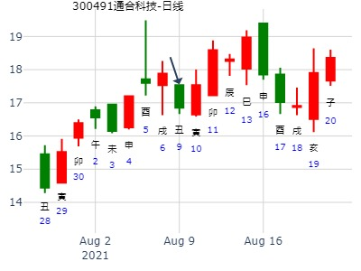

男 占事：下周3月2日——6日股市行情
公历起卦时间：2015年2月28日11时30分 (手工指定)
干支：乙未年 戊寅月 乙亥日 壬午时 （日空：申酉）
兑宫：泽地萃 坤宫：坤为地 (六冲)
六神 伏神 本 卦 变 卦
玄武 父母丁未土 ▅▅ ▅▅ 兄弟癸酉金 ▅▅ ▅▅ 世
白虎 兄弟丁酉金 ▅▅▅▅▅ 应 ○→ 子孙癸亥水 ▅▅ ▅▅
腾蛇 子孙丁亥水 ▅▅▅▅▅ ○→ 父母癸丑土 ▅▅ ▅▅
勾陈 妻财乙卯木 ▅▅ ▅▅ 妻财乙卯木 ▅▅ ▅▅ 应
朱雀 官鬼乙巳火 ▅▅ ▅▅ 世 官鬼乙巳火 ▅▅ ▅▅
青龙 父母乙未土 ▅▅ ▅▅ 父母乙未土 ▅▅ ▅▅
短线丑日，就子化父回头克，涨不动。
寅日或许合绊子孙。卯日当值，小涨。16日卯日卯月，大涨。
辰日子孙入墓，跌。巳日子孙日冲，小跌。
申日则亥水长生，大涨。酉日星。戌日合卯，又克子孙，星。
亥子日，原神有力。涨。16日卯日，财爻有力，涨。
马后炮：申酉空，等出空。
类似：萃之坤，爻辞为吉，兄化子&子化父 K线为凶。
000918，萃之坤，爻辞为吉，兄化子孙，子孙化父回头克。K线为凶。
公历：2001年6月16日14时32分 星期六 北京时间
干支：辛巳年 甲午月 庚戌日 癸未时 旬空：申酉 辰巳 寅卯 申酉
兑：泽地萃 坤：坤为地(六冲)
【本 卦】 【变 卦】
▅▅ ▅▅ 父母未土 ▅▅ ▅▅ 兄弟酉金 世
▅▅▅▅▅ 兄弟酉金 应○→ ▅▅ ▅▅ 子孙亥水
▅▅▅▅▅ 子孙亥水 ○→ ▅▅ ▅▅ 父母丑土
▅▅ ▅▅ 妻财卯木 ▅▅ ▅▅ 妻财卯木 应
▅▅ ▅▅ 官鬼巳火 世 ▅▅ ▅▅ 官鬼巳火
▅▅ ▅▅ 父母未土 ▅▅ ▅▅ 父母未土
赵哲分析：
分析：
1。消息丑土克制多方亥水，子日刑卯木，股价大跌。
2。丑日下跌。
3。寅卯日出空值日股价反弹。
4。未日生空方酉金，股价低开。
冲去消息丑土，多方亥水生股价收阳
王注：
1。子孙化回头克，整个格局只有兄弟发动有效。
子日大跌，是否也视为子日合变爻父母丑土，合熬增力，子孙被重重克伤。
2。丑日克原神亥水，跌。
3。寅日合亥水，但还是受到丑土之克。冲高回落。
4。卯日冲散兄弟。涨。（同时可能也制丑土）
5。辰日墓亥水。又合昨天冲散之酉金。跌。
6。未日冲散仇神丑土，兄弟子孙连动，大涨。
总结： 变爻为带生克的喜忌神时，无论旺衰一律视为冲散。不混为冲暗动之流。
动爻则一般衰则冲散。旺则冲旺。
◇九四:大吉、无咎。
象曰：大吉无咎，位不当也。
◇九五:萃有位，无咎。匪孚，元永贞，悔亡。
象曰：萃有位，志未光也。
主帖标题: 7月18日大盘
公历时间：2019年7月18日9时27分
干 支：己亥年 辛未月 丙辰日 癸巳时
旬 空：辰巳 戌亥 子丑 午未
神 煞：驿马─寅 桃花─酉 日禄─巳 贵人─酉，亥
兑宫：泽地萃 坤宫：坤为地（六冲）
六神 【本 卦】 【变 卦】
青龙 ▄▄ ▄▄ 父母丁未土 ▄▄ ▄▄ 兄弟癸酉金 世
玄武 ▄▄▄▄▄ 兄弟丁酉金 应○ ▄▄ ▄▄ 子孙癸亥水
白虎 ▄▄▄▄▄ 子孙丁亥水 ○ ▄▄ ▄▄ 父母癸丑土
螣蛇 ▄▄ ▄▄ 妻财乙卯木 ▄▄ ▄▄ 妻财乙卯木 应
勾陈 ▄▄ ▄▄ 官鬼乙巳火 世 ▄▄ ▄▄ 官鬼乙巳火
朱雀 ▄▄ ▄▄ 父母乙未土 ▄▄ ▄▄ 父母乙未土
涨的可能性大
主帖标题: 2021年第33周 8月9至8月13日个股300491预测汇总
公历时间：2021年8月7日7时47分 农历时间：辛丑年 六月二十九日辰时
干 支：辛丑年 乙未月 丁亥日 甲辰时
旬 空：辰巳 辰巳 午未 寅卯
神 煞：驿马─巳 桃花─子 日禄─午 贵人─酉，亥
兑宫：泽地萃 坤宫：坤为地（六冲）
六神 【本 卦】 【变 卦】
青龙 ▄▄ ▄▄ 父母丁未土 ▄▄ ▄▄ 兄弟癸酉金 世
玄武 ▄▄▄▄▄ 兄弟丁酉金 应○ ▄▄ ▄▄ 子孙癸亥水
白虎 ▄▄▄▄▄ 子孙丁亥水 ○ ▄▄ ▄▄ 父母癸丑土
螣蛇 ▄▄ ▄▄ 妻财乙卯木 ▄▄ ▄▄ 妻财乙卯木 应
勾陈 ▄▄ ▄▄ 官鬼乙巳火 世 ▄▄ ▄▄ 官鬼乙巳火
朱雀 ▄▄ ▄▄ 父母乙未土 ▄▄ ▄▄ 父母乙未土

天同：科威尔未来10天走势
时间: 2021-10-13 6时50分
干支: 辛丑年戊戌月甲午日丁卯时 (旬空: 辰巳 )
泽地萃 坤为地
六神 伏神 本 卦 变 卦
玄武 ▅▅ ▅▅ 父母未土 ▅▅ ▅▅ 兄弟酉金 世
白虎 ▅▅▅▅▅ 兄弟酉金 应Ｏ→ ▅▅ ▅▅ 子孙亥水
腾蛇 ▅▅▅▅▅ 子孙亥水 Ｏ→ ▅▅ ▅▅ 父母丑土
勾陈 ▅▅ ▅▅ 妻财卯木 ▅▅ ▅▅ 妻财卯木 应
朱雀 ▅▅ ▅▅ 官鬼巳火 世 ▅▅ ▅▅ 官鬼巳火
青龙 ▅▅ ▅▅ 父母未土 ▅▅ ▅▅ 父母未土
亨。 王假有庙，利见大人，亨，利贞。 用大牲吉，利有攸往。
初六：有孚不终，乃乱乃萃，若号一握为笑，勿恤，往无咎。
六二：引吉，无咎，孚乃利用禴。
六三：萃如，嗟如，无攸利，往无咎，小吝。
九四：大吉，无咎。
九五：萃有位，无咎。 匪孚，元永贞，悔亡。
上六：齎咨涕洟，无咎。
彖︰萃，聚也。顺以说，刚中而应，故聚也。王假有庙，致孝享也；利见大人，亨，聚以正也；用大牲，吉，利有攸往，顺天命也。观其所聚，而天地万物之情可见矣。
占事：券商股11.6--12.6日？ 老虎99
公历起卦时间：2015年11月6日8时24分 (手工指定)
干支：乙未年 丙戌月 丙戌日 壬辰时 （日空：午未）
兑宫：泽地萃 坤宫：坤为地 (六冲)
六神 伏神 本 卦 变 卦
青龙 父母丁未土 ▅▅ ▅▅ 兄弟癸酉金 ▅▅ ▅▅ 世
玄武 兄弟丁酉金 ▅▅▅▅▅ 应 ○→ 子孙癸亥水 ▅▅ ▅▅
白虎 子孙丁亥水 ▅▅▅▅▅ ○→ 父母癸丑土 ▅▅ ▅▅
腾蛇 妻财乙卯木 ▅▅ ▅▅ 妻财乙卯木 ▅▅ ▅▅ 应
勾陈 官鬼乙巳火 ▅▅ ▅▅ 世 官鬼乙巳火 ▅▅ ▅▅
朱雀 父母乙未土 ▅▅ ▅▅ 父母乙未土 ▅▅ ▅▅
动爻兄子连环生，涨。卯日基本为最高点。 到变爻丑日，开始多头惧怕。辰日与后面戌日父母旺而克子孙，大跌。
亥月莫非世爻月破，故而跌的原因？
占事: 600157 永泰能源2015年走势
起卦方式：手动摇卦
公历时间：2014年12月29日19时32分
干支：甲午年 丙子月 甲戌日 甲戌时 旬空：辰巳 申酉 申酉 申酉
兑宫：泽地萃 坤宫：坤为地（六冲）
六神 【本 卦】 【变 卦】
玄武 ▄▄ ▄▄ 父母丁未土 ▄▄ ▄▄ 兄弟癸酉金 世
白虎 ▄▄▄▄▄ 兄弟丁酉金 应O-> ▄▄ ▄▄ 子孙癸亥水
螣蛇 ▄▄▄▄▄ 子孙丁亥水 O-> ▄▄ ▄▄ 父母癸丑土
勾陈 ▄▄ ▄▄ 妻财乙卯木 ▄▄ ▄▄ 妻财乙卯木 应
朱雀 ▄▄ ▄▄ 官鬼乙巳火 世 ▄▄ ▄▄ 官鬼乙巳火
青龙 ▄▄ ▄▄ 父母乙未土 ▄▄ ▄▄ 父母乙未土